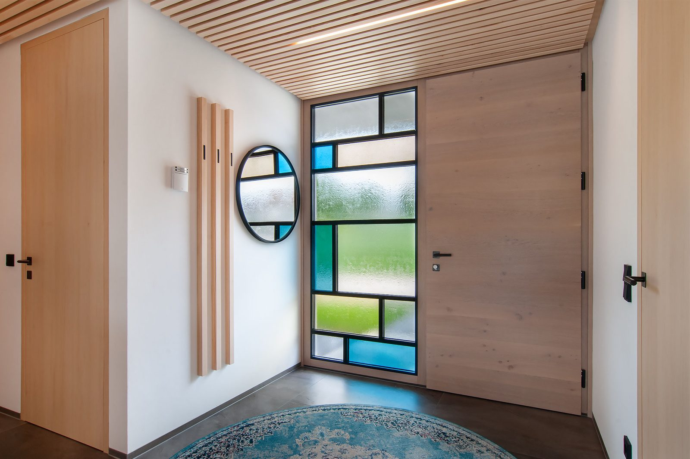
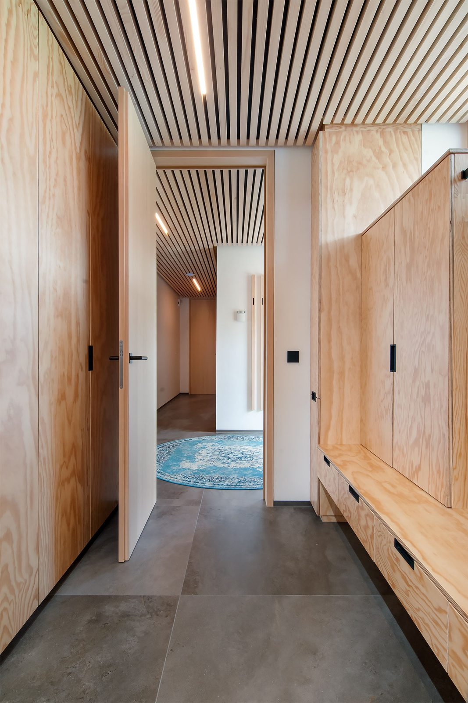
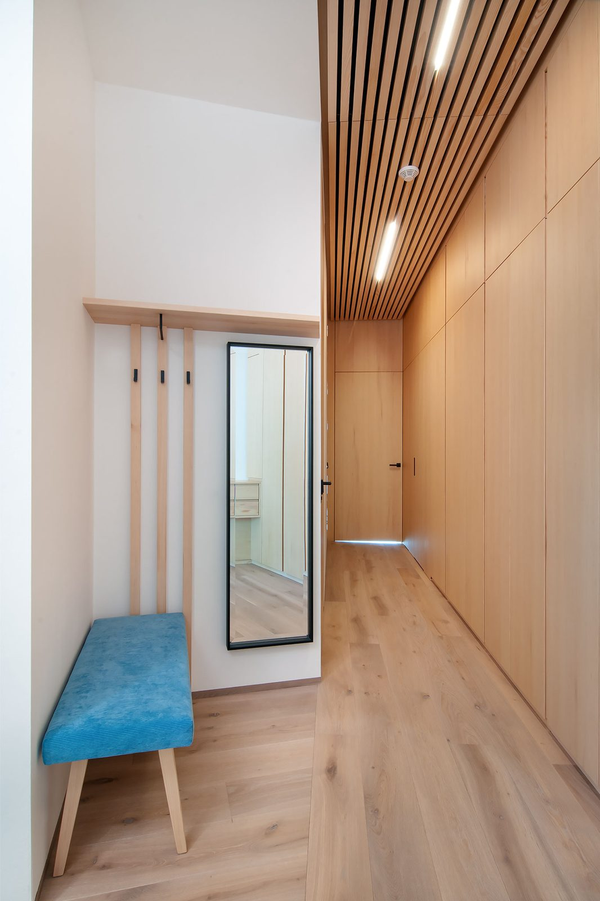
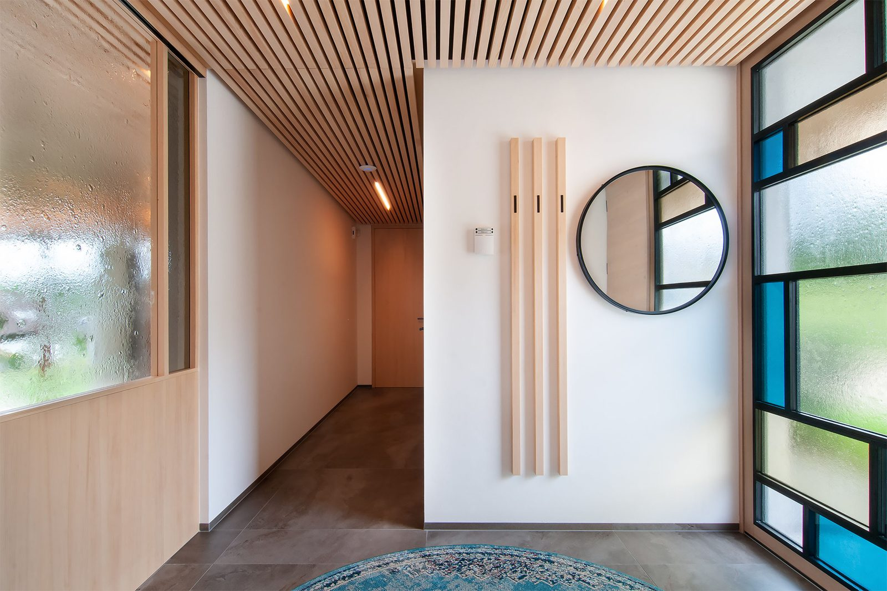
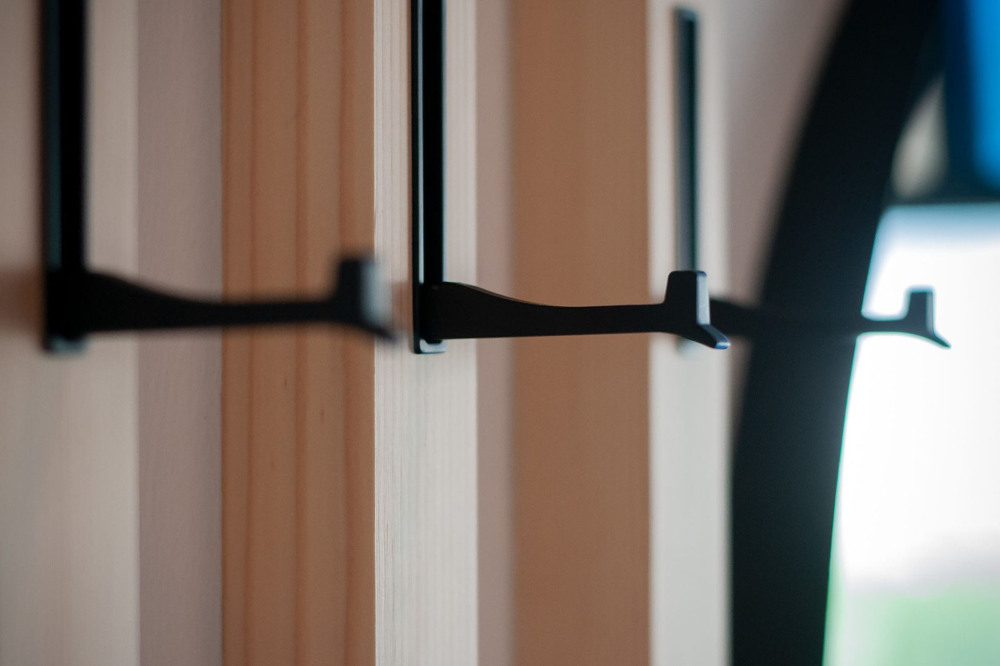
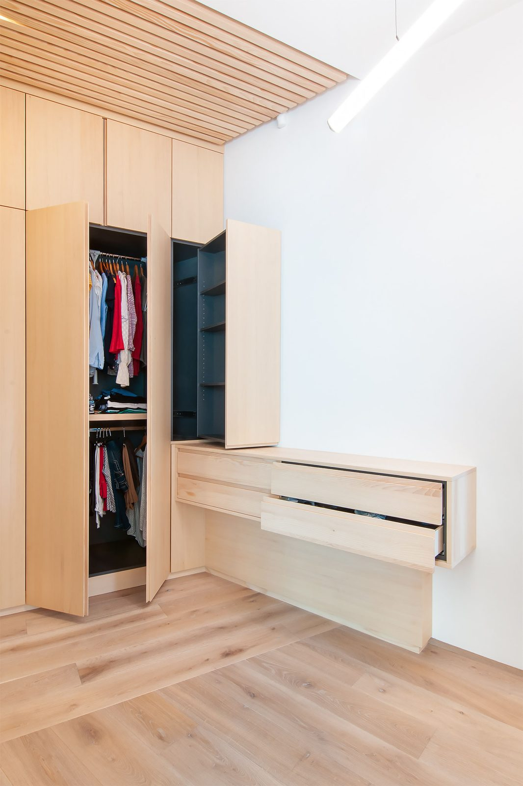
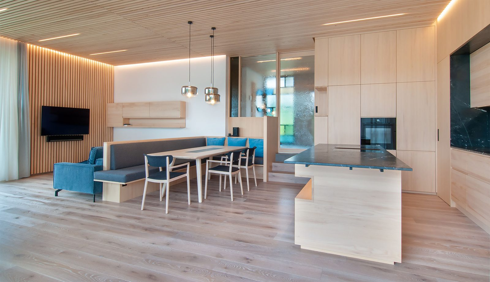
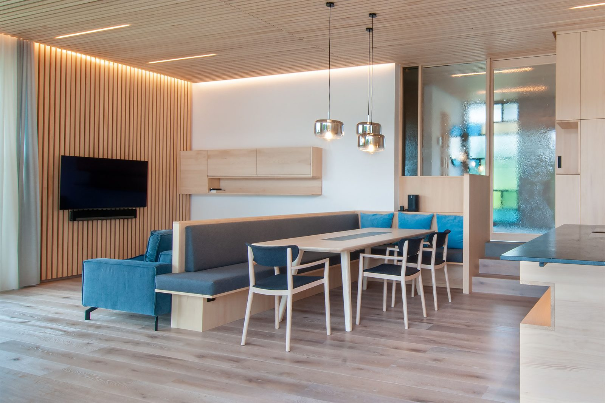
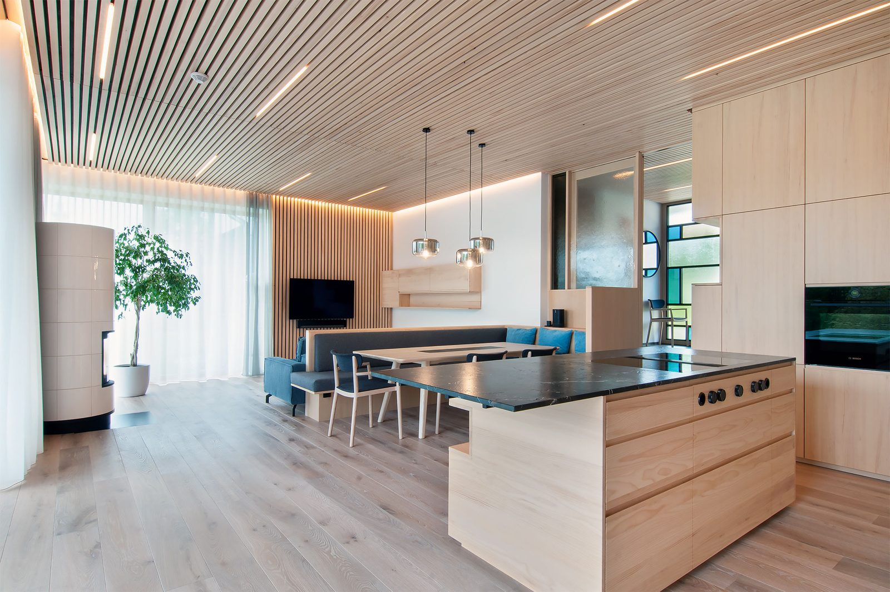
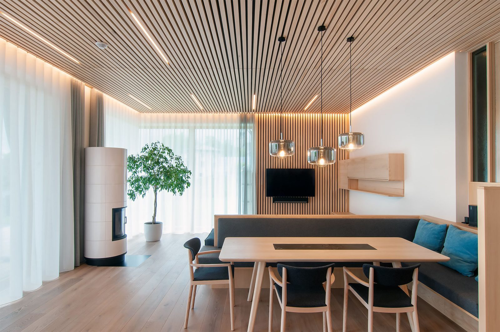

Arbeiten
Werkverzeichnis
Von der Garderobe bis zur Kochinsel: eine Übersicht über ausgeführte Einrichtungen, geordnet nach Raum und Material. Die Bezeichnungen beschreiben jeweils Holzart und Oberfläche der tatsächlich gebauten Möbel.
Projekt 01
Wohnhaus – Möbeleinrichtung in Weißtanne
Eine durchgehende Einrichtung in hellem Nadelholz: Lattendecken, raumhohe Einbauschränke, Garderobe, Schrankraum und der offene Wohn-Essbereich mit Küchenblock. Die Fotostrecke zeigt das Haus von der Eingangstür bis zum Kachelofen.










Projekt 02
Seehäuser – Inneneinrichtung aus gebeizten und lackierten Nadelhölzern
In Anlehnung an den Bootsbau sind Wand- und Deckenverkleidungen mit Massivholzleisten und Holzvertäfelungen unter Verwendung von Fichte, Kiefer und Tanne ausgeführt. Die Oberflächen wurden gebürstet, gebeizt und matt lackiert.
Wandverkleidungen, Türen und Möbeldetails sind im 1-Meter-Raster ausgeführt. Die großen Wandverkleidungen und Türen sind flächenbündig und ohne sichtbare Beschläge eingebaut, die Eckausbildungen auf Gehrung gearbeitet.
Raumtrennende Schrankwände verbergen Garderobe, Stauraum und Kücheneinbaugeräte hinter Türen.
In der Kochinsel, die allseitig mit 8 mm Keramik verkleidet ist, sind Kochfeld und Spüle flächenbündig integriert.
- HölzerFichte, Kiefer, Tanne
- Oberflächegebürstet, gebeizt, matt lackiert
- Raster1 Meter, flächenbündig
- Eckenauf Gehrung gearbeitet
- Kochinselallseitig 8 mm Keramik
Kategorie 03
Küchen und Wohnen
Vierzehn ausgeführte Küchen, jede mit eigener Materialkombination – von der Landhausküche mit Profilrahmentüren bis zur Hochglanzfront.
- Holzküche Palisander, Steinplatte, BORA-Tischabzug – moderne Architektur trifft denkmalgeschütztes Haus
- Landhausküche mit Rahmentüren weiß lackiert, Profilrahmenkonstruktion
- Dunkelgrauer Schleiflack, Eiche natur, offenporige Esche schwarz lackiert – naturbelassene Eiche und lackierte Esche
- Rüster mit Linoleumfronten
- Eiche natur lackiert mit Schleiflack, Arbeitsplatte Keramik
- Eiche dunkelgrau gebeizt, Arbeitsplatte in Silestone
- Eiche gebürstet mit Schleiflack, schräge Eingriffe mit Niro hinterlegt
- Heimische Braunesche Massivholz mit Waldkante
- Relief-Wandverkleidung in Eiche und Küche in Schleiflack
- Hochglanzlack – fifty shades of grey
- Hellgrau kombiniert mit Nuss und grauer Strukturfront
- MDF schwarz mit Schleiflack weiß
- Hochglanzlack rotbraun und Eiche weiß geölt
- Hochglanzlack weiß und Eiche gebürstet
Kategorie 04
Wohn- und Esszimmer
- Wildeiche-Wandverkleidung aus Stoffelementen
- Fernsehmöbel mit Lodenbespannung in Eiche und Strukturlack
- Strukturlack und Schladminger Loden
- Massivholz Nuss und Eiche geölt
- Eiche gebürstet, matt lackiert
- Eiche natur, matt lackiert
- Olive
Kategorie 05
Schlafzimmer
- Zirbe massiv
- Hotelzimmer
- Wandverkleidung, Küchenblock, Waschtischunterbau und Bett in Eiche gebeizt
- Wandverkleidung mit indirekter LED-Beleuchtung, Boxspringbett, Möbel in Altholz, Tip-on-Laden und -Türen
- Zirbenbett geölt, grauer Hochglanzlack, Schladminger Loden
- Kleiderschrank in Dachschräge gebaut
- Zirbenbett, Nachtkästchen roh, fein geschliffen
Kategorie 06
Jugendzimmer
- Braunesche teilmassiv
- Jugendzimmer variabel verstellbar, Kunststoff
Kategorie 07
Vorzimmer
- Schleiflack, grifflose Möbel mit Tip-on-Beschlägen
- Schleiflack und Eiche natur matt lackiert
- Europäische Nuss
- MDF schwarz
Kategorie 08
Stiegenhaus
- Aus alt mach neu – Bestand vor dem Umbau
- Nachher: Eichenholz, Schleiflack, Keramik, Stoffbespannung
Kategorie 10
Weinkeller
- Tische und Bänke in Massivholz Braunesche
Kategorie 09
Bad
Waschtischunterbauten, Spiegelschränke und Badmöbel nach Maß – abgestimmt auf Keramik, Corian und die vorhandene Fliesenfläche.
- Waschtischunterbau mit Aufsatzbecken auf Keramikplatte, Spiegelschrank nach Maß
- Eiche gebeizt, Fototapete, Spiegelschrank mit Schiebetüre
- Schleiflack weiß und Altholz „Struktur-Dekor“
- Mooreiche sägerau matt lackiert, Schleiflack weiß
- Hochglanz weiß, Corian weiß
- Rüster/Ulme natur lackiert
Nächster Schritt
Reden wir über Ihr Projekt
Kreativität bei der Planung, kompetente Beratung und Möbel in bester Qualität – dafür braucht es zuerst ein Gespräch. Kommen Sie in die Werkstatt nach Ried im Traunkreis oder schicken Sie uns Ihre Unterlagen.